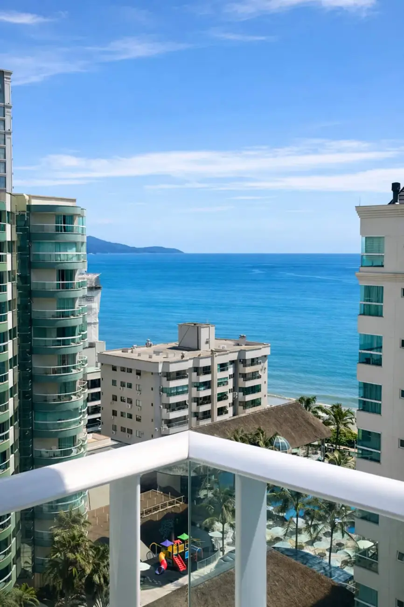
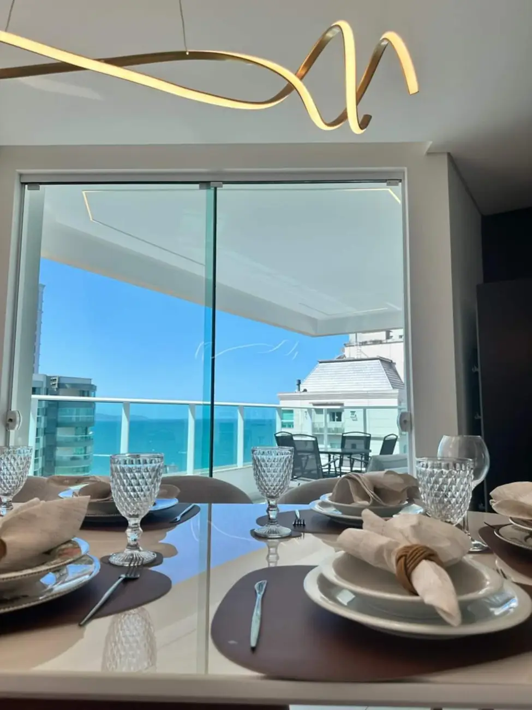

SEU REFÚGIO EM MEIA PRAIA, ITAPEMA · SC
O mar como cenário.
Você, presente.
Abra espaço para os dias sem pressa.
Uma cobertura para reunir quem você ama.

Um convite para ficar.CONFORTO COM HORIZONTE ABERTO
Tem lugares que
fazem a gente
se sentir em casa.
O café se estende. A conversa continua. Lá fora, o azul muda a cada hora. Aqui dentro, o melhor da viagem é ter tempo para estar junto.
No Terraza Séra, os detalhes acolhem e a vista convida a respirar mais devagar.
Conheça seu próximo destino ↗CONHEÇA CADA CANTO
Feito para se sentir bem.
Imagens reais da cobertura.
Abra uma foto e imagine seus dias aqui.
LEVE SÓ A VONTADE DE DESCANSAR
Os detalhes cuidam
do resto.
Clima de conforto
Ar-condicionado e Smart TVs.
À mesa, juntos
Cozinha equipada e varanda com churrasqueira.
Praticidade na estadia
Wi-Fi, enxoval e máquina lava e seca.
Depois da praia
Lava-pés e box para itens de praia.
UM POUCO DA VIDA POR AQUI
A experiência, em movimento.
QUEM VIVEU, CONTA
“Perfeito! Fiquei por 3 meses e foi uma experiência excelente. Com certeza voltarei em breve!”Ver publicação original ↗
MEIA PRAIA · ITAPEMA · SANTA CATARINA
O destino é lindo.
O ritmo é seu.
Praia, passeios e uma pausa para aproveitar Itapema. Uma estadia com o mar por perto e bons momentos no caminho.
Explore Meia Praia no mapa ↗O endereço completo é informado pelo anfitrião após a confirmação da reserva.um lugar para voltar.
ANTES DE FAZER AS MALAS
Suas dúvidas, com calma.
Quantas pessoas podem se hospedar?
A capacidade anunciada atualmente é de até 10 hóspedes. Consulte a configuração de camas e colchões extras no Airbnb antes de reservar.
Como consultar valores e datas?
Use o botão de disponibilidade para consultar datas, tarifas e regras atualizadas diretamente no Airbnb. A consulta no site não confirma uma reserva.
A cobertura tem garagem?
São duas vagas. Confirme com o anfitrião a compatibilidade com o tamanho dos seus veículos.
Como funciona o check-in?
A chegada é combinada com o anfitrião. Os horários, instruções e condições devem ser confirmados no momento da reserva.
SEUS PRÓXIMOS DIAS LEVES
O horizonte está aqui.
Só falta a sua data.
Valores e disponibilidade são confirmados no Airbnb.
Prefere conversar? Fale pelo Instagram ↗